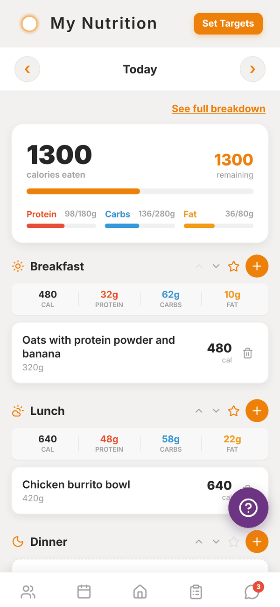
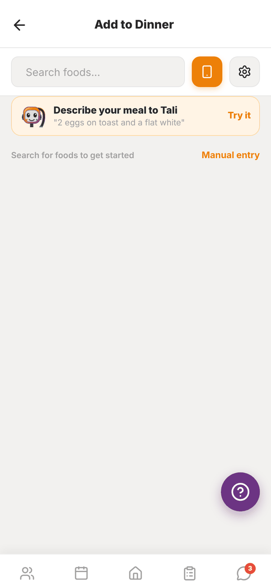
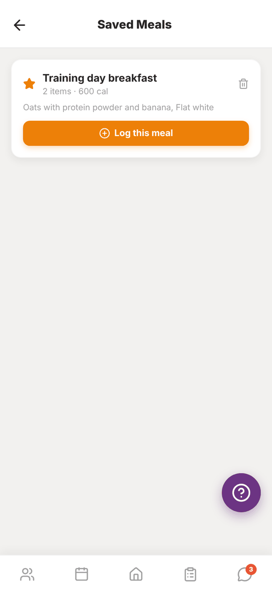

Totality for trainers
Your own food log
Log your own food with search, barcodes, Ask Tali or manual entry, set your targets, save meals, and how Totality Nutrition links in.
Trainers get the same food log as clients. Open My Nutrition from the Home shortcuts.


The day view#
- Use ‹ and › to move between days. You can go back up to 7 days.
- The top card shows calories eaten and remaining, with bars for Protein, Carbs and Fat against your targets.
- See full breakdown opens every nutrient for the day.
- Meals are Breakfast, Lunch, Dinner and Snack. Tap Add Another Snack for Snack 2 to 5.
- Each meal shows its totals. Use the arrows to collapse or expand it.
Set your targets#
Tap Set Targets at the top. Enter your Daily Calorie Target (or Daily Energy Target in kJ), Protein, Carbs and Fat, then Save Targets. Need help with the numbers? Use Calorie Calc on Home first.
Add food#
Tap + on a meal, then add food one of these ways:
- Search: type in Search foods.... Results come from the Australian food database first, then Open Food Facts for packaged foods. The settings button filters by Brand. Favourites and recent foods show before you search.
- Scan a barcode: tap the phone button next to the search box and point your camera at the barcode. On the web this needs camera permission.
- Ask Tali: tap Describe your meal to Tali and type what you ate, like "2 eggs on toast and a flat white". Tali splits it into foods with amounts. Check the list, change anything, pick the meal and add it. Describing meals uses no credits, with a daily limit. It needs Tali on your plan.
- Manual entry: tap Manual entry and type the food name, serving size and macros.
When you pick a food, change the serving in grams and the macros update as you type. If a label looks wrong, you can correct the per 100g numbers before adding. Tap Add to Dinner (or whichever meal).
Change or delete an entry#
- Tap a food to adjust its serving size or correct the numbers, then Save.
- Tap the bin to delete it.
Saved meals#
Tap the star on a meal to save everything in it as one meal, with a name like "Breakfast: Mon 4 Aug". To log it again, tap Saved Meals at the bottom of the day, then Log this meal and pick which meal to add it to.

Totality Nutrition#
Totality Nutrition is our food tracking app for anyone. It uses the same account as Totality, so if you or your clients log in with the same email and password, it's the same food log. Food logged in Totality Nutrition shows here and on a client's profile, and the other way round.
Totality members get 50% off the Nutrition plan. See the Totality Nutrition guide for its own features.
Questions#
The scanner says "Not Found".
That product isn't in the food databases yet. Search by name, or use Manual entry.
Can I log yesterday's food?
Yes. Use ‹ to go back a day (up to 7 days), then add to the meal.
Do my clients see my food log?
No. Your food log is yours.